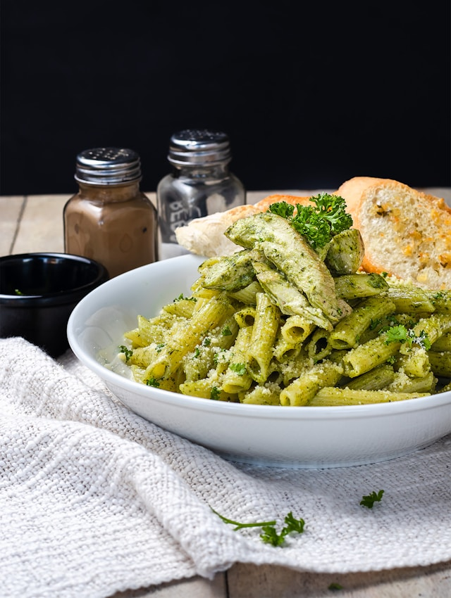

Pesto Pasta

Photo by
Nerfee Mirandilla on Unsplash
Description
This is a very, very simple recipe meant to come together in 15 minutes with no prep time. It's not fancy, but it gets the job done when you're in a hurry and just need something for dinner ASAP!
Ingredients
- 8 ounces of your favorite (non-spaghetti) pasta
- 3 tablespoons of your favorite (storebought or homemade) pesto
- A few spoonfuls of sundried tomatoes
- A pinch of salt
- Parmesan cheese, if desired
Directions
- Cook pasta according to package directions. If your pesto or sundried tomatoes are on the dry side, reserve a bit of pasta water.
- Drain pasta, then add back to pot with tomatoes and pesto
- Mix well, adding salt to taste.
- Serve with cheese as desired.
Home